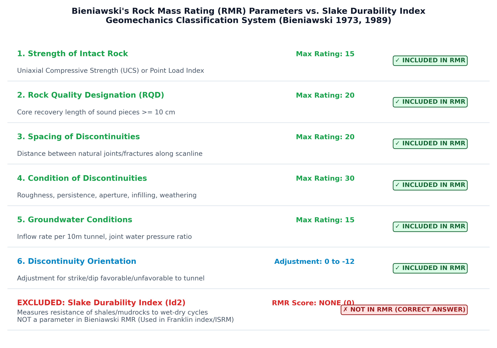
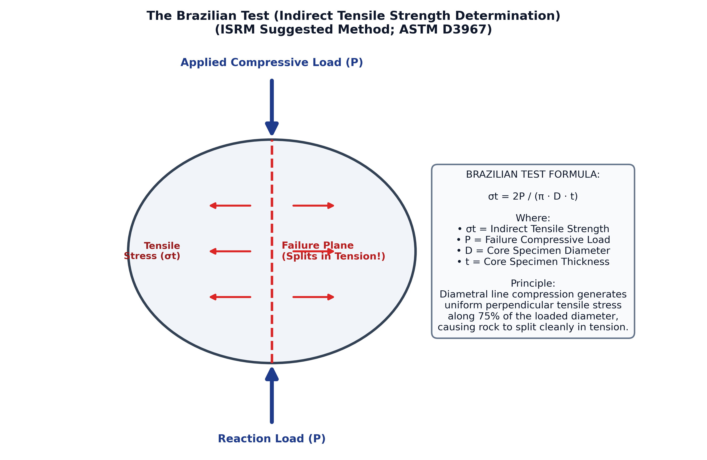
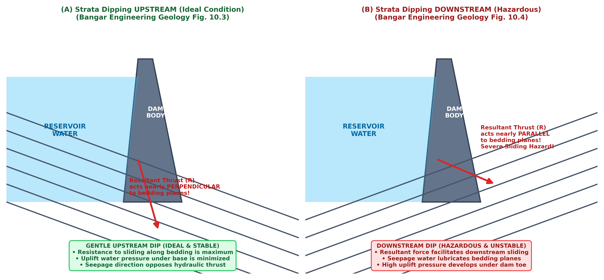
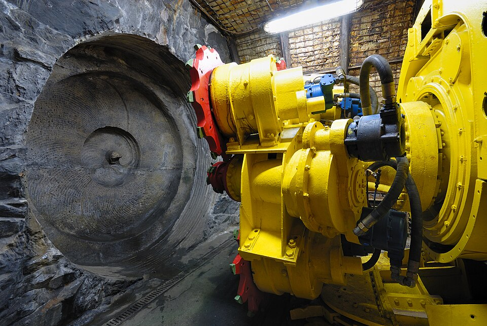
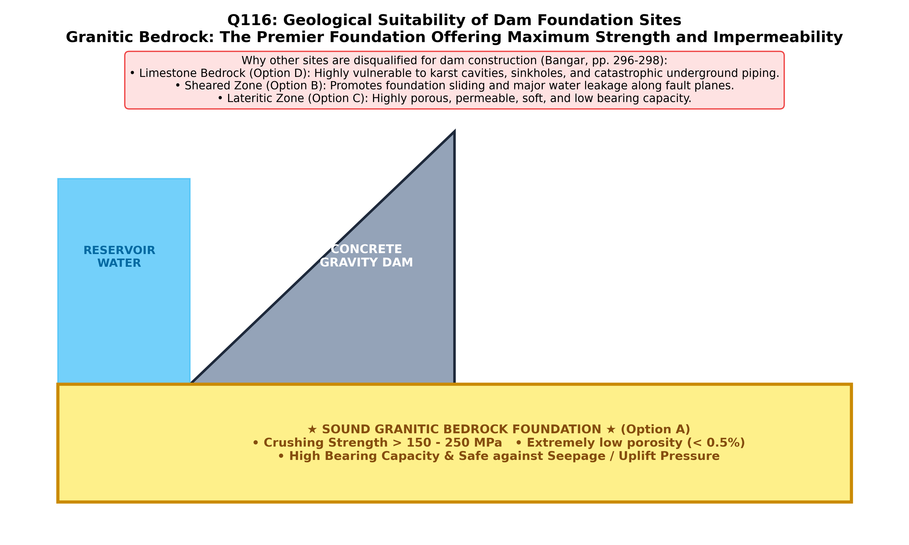
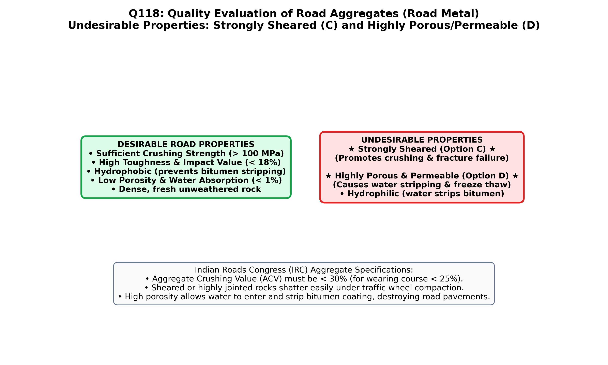
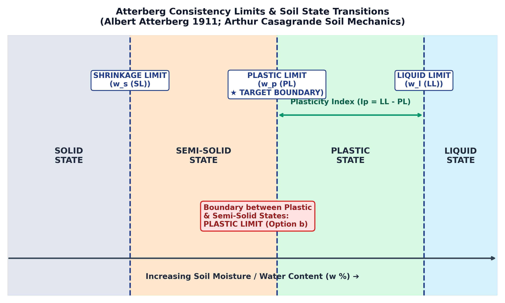

10.1 Geology and Civil Engineering



- Rock Quality Designation (Deere, 1964): $\text{RQD} = \frac{\sum \text{Sound Core Pieces} \ge 10\text{ cm}}{\text{Total Core Run}} \times 100\%$
- Slope Factor of Safety: $FS = \frac{c' + (\sigma_n - u)\tan\phi'}{\tau}$ (rising pore water pressure $u$ during monsoons triggers slope failure).
The importance of geology in civil engineering lies in: (1) providing systematic knowledge of construction materials (building stones, road aggregates, clays, limestones), (2) assessing foundation conditions of dams, bridges, and buildings, (3) guiding tunnel alignment and groundwater control, and (4) mitigating landslides, coastal erosion, and seismic hazards.
Engineering Properties of Building Stones. Key properties tested before selecting foundation or building rock include: Porosity (ratio of pore volume to total volume; low-porosity rocks are stronger and frost-resistant), Crushing / Compressive Strength ($UCS$) (granite, basalt, and quartzite exceed $150\text{ MPa}$), Transverse Bending Strength, Abrasion & Attrition Resistance (for road metal), Durability against Weathering (resistance to acid rain in industrial cities), and Workability.
10.2 Dams and Reservoirs



A Dam is a barrier built across a river valley to impound water in a Reservoir. Major types include Gravity Dams (resisting thrust by dead weight; require strong bedrock), Arch Dams (transferring load to rigid canyon abutments), Buttress Dams, and Earth/Rockfill Dams (suitable for wide alluvial valleys).
- Bieniawski RMR (0–100): Sums ratings for 6 parameters: (1) Intact UCS, (2) RQD, (3) Joint spacing, (4) Joint condition, (5) Groundwater, and (6) Joint orientation adjustment.
- Barton's Tunneling Quality Index ($Q$): $$Q = \frac{RQD}{J_n} \times \frac{J_r}{J_a} \times \frac{J_w}{SRF}$$
- Lugeon Water-Pressure Test: $1\text{ Lugeon} = 1\text{ L/min}$ water loss per metre of borehole at $1\text{ MPa}$ ($10\text{ bar}$) pressure ($\approx 1.3 \times 10^{-7}\text{ m/s}$ permeability). Dam foundations exceeding $3\text{--}5\text{ Lugeons}$ require systematic curtain grouting.
Geological Conditions for Dam Sites: Sound, impermeable, unyielding bedrock at shallow depth; narrow gorge; and absence of active faults. Effect of Dip and Strike: Beds dipping upstream provide the most favourable condition because the resultant force ($R$) of dam weight and water pressure acts perpendicular to bedding, preventing sliding and lengthening the seepage path. Beds dipping downstream are most dangerous because water lubricates bedding planes and builds upward Uplift Pressure, promoting downstream sliding failure. Fractured foundations are stabilized by shallow consolidation grouting and deep high-pressure curtain grouting.
Reservoirs. Key geological problems are Leakage (through porous sandstones, fault zones, buried channels, or karstic limestone sinkholes), Silting / Siltation (sediment accumulation reducing storage life), and Reservoir-Induced Seismicity (RIS).
10.3 Tunnels and Bridges



Tunnels. Underground passages for highways, railways, or hydropower water conduits. Massive unjointed granite or thick horizontal strata provide self-supporting tunnel roofs. Driving a tunnel across the strike of inclined beds is far safer than driving along the strike (which causes asymmetric side-wall pressures and roof collapse). In folded strata, Synclinal troughs channel heavy pressurized groundwater into the tunnel (flooding hazard), whereas Anticlinal crests drain water away down the limbs (though radial crest tension joints require rock bolting). Intersecting saturated Fault Zones causes sudden inrushes of crushed gouge and severe overbreak.
Bridges. Bridge piers and abutments must rest on firm, scour-resistant bedrock below the maximum depth of riverbed scouring, avoiding dipping weak shale beds or fault zones.
10.5 Landslides and Mass Wasting


Landslides are rapid downward and outward movements of rock, debris, or soil masses down a slope under gravity along a well-defined shear surface. Types include slow Soil Creep, plastic Earthflows / Mudflows, curved Rotational Slumps in cohesive soils, planar Translational Rockslides along dipping bedding/joint planes, and Rockfalls from steep cliffs.
Causes & Prevention. Triggered by natural slope steepening, heavy monsoon pore-water saturation, undercutting by rivers/road cuts, weak clay interbeds, and earthquake vibrations. Prevented by surface and subsurface drainage ditches, bench terracing to flatten slopes, retaining walls with weep holes, rock bolting / grouting, and afforestation.
Chapter Review Questions (K. M. Bangar)
1. Outline the importance of geology in civil engineering and list the essential engineering properties of building stones.
2. Discuss the geological investigations for dam sites. Explain why upstream-dipping beds are favourable and downstream-dipping beds are hazardous.
3. Describe the geological considerations in tunneling through horizontal, inclined, folded (anticlines vs. synclines), and faulted rocks.
4. What are landslides? Classify mass movements, explain their causes, and describe engineering methods for slope stabilization.
Visual Reference Gallery (Clean Color Diagrams & Specimens)
Supplementary full-color diagrams from Winter, Perkins, Fossen, Boggs and high-resolution USGS/Wikimedia photographs replacing scanned textbook drawings.





